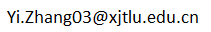

Welcome to Yi Zhang's Homepage |
| 09/2013 -- 02/2017 | Ph.D.* in Mathematics with distinction, Institute for Algebra, Johannes Kepler University Linz, Linz, Austria. (Co-supervisors: Prof. Manuel Kauers and Prof. Ziming Li) |
| 09/2011 -- 07/2016 | Ph.D. in Applied Mathematics, Key Laboratory of Mathematics Mechanization, AMSS, University of Chinese Academy of Sciences, Beijing, China. (Co-supervisors: Prof. Manuel Kauers and Prof. Ziming Li) |
| 09/2007 -- 07/2011 | B.Sc. in Mathematics, School of Mathematical Sciences, Soochow University, Suzhou, China. |
| 02/2020 -- present | Assistant Professor at Department of Foundational Mathematics, Xi'an Jiaotong-Liverpool University, Suzhou, China. |
| 09/2018 -- 01/2020 | Research Associate at Department of Mathematical Sciences, The University of Texas at Dallas, Dallas, USA. (Advisor: Prof. Carlos E. Arreche) |
| 03/2017 -- 08/2018 | Postdoc Researcher at Johann Radon Institute for Computational and Applied Mathematics (RICAM), Austrian Academy of Sciences, Linz, Austria. (Advisor: Prof. Christoph Koutschan) |
| 06/2019 -- 07/2019 | Visiting Scholar at Faculty of Mathematics and Statistics, Ton Duc Thang University, Ho Chi Minh City, Vietnam. (Host researcher: Dr. Thieu N. Vo) |
| 05/2017 | Visiting Scholar at Department of Mathematics, Kobe University, Kobe, Japan. (Host researcher: Prof. Nobuki Takayama) |
|  | |
| PGP pubic key | 1E80 387F F918 7028 C570 6CCB 3E57 3B5E A346 4A0C |
| sMail | Dr. Yi Zhang Department of Foundational Mathematics Xi'an Jiaotong-Liverpool University (XJTLU) 111 Ren'ai Road, Suzhou Dushu Lake Science and Education Innovation District Suzhou Industrial Park, Suzhou, China, 215123 |
| Office | MB 421B |
| Phone | +86 0512 8188 9056 |
| Fall 2021 | Lecturer (Analysis 1), Xi'an Jiaotong-Liverpool University. |
| Spring 2021 | Lecturer (Multivariate Calculus), Xi'an Jiaotong-Liverpool University. |
| Fall 2020 | Lecturer (Analysis 1), Xi'an Jiaotong-Liverpool University. |
| Spring 2020 | Lecturer (Multivariate Calculus), Xi'an Jiaotong-Liverpool University. |
| Fall 2019 | Instructor (Integral Calculus), The University of Texas at Dallas. |
| Spring 2019 | Instructor (Linear Algebra), The University of Texas at Dallas. |